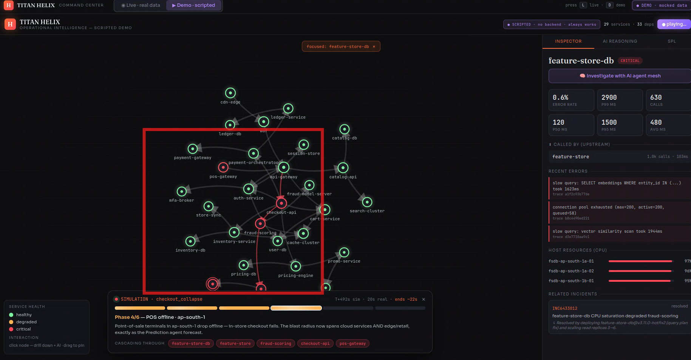
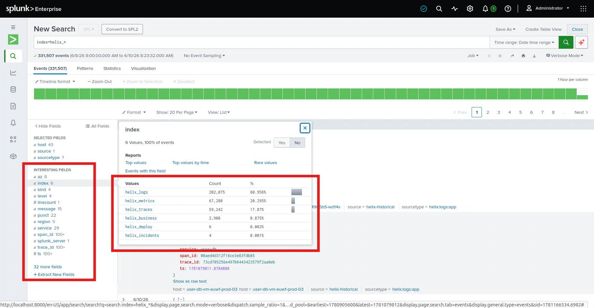
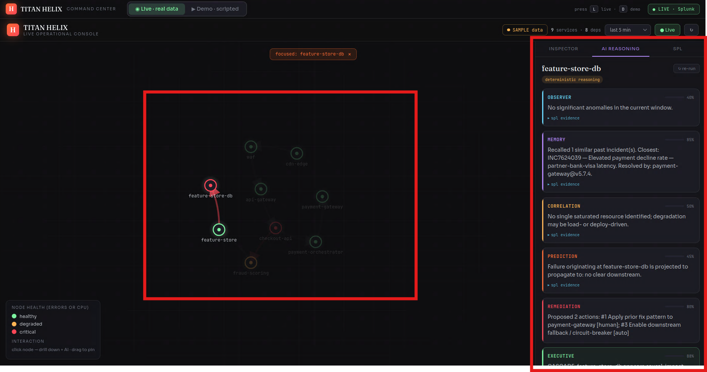
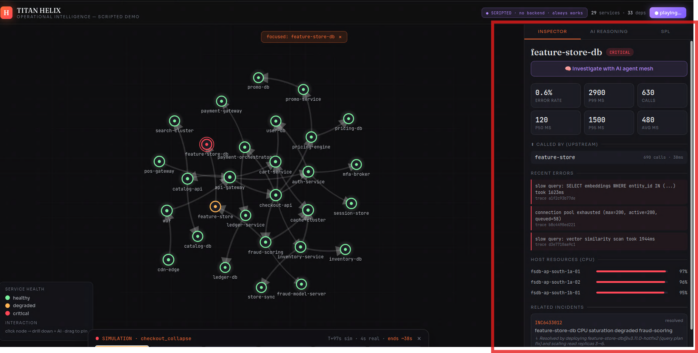
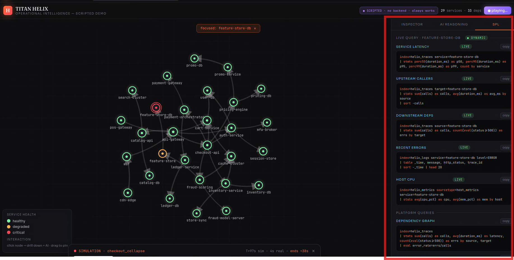
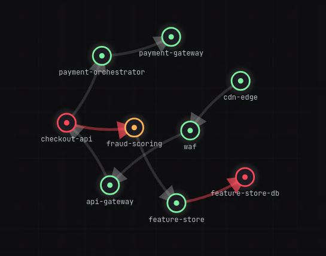

An autonomous reasoning mesh that sits on your Splunk data and explains failures while they unfold.
A feature-store database drifts to 94% CPU. It's slow, not broken — every query still returns 200 OK, so error-rate alerting stays quiet. Ninety seconds later checkout is throwing 503s and a region goes dark. TITAN HELIX already knew the database was the cause.

⊞assets/screens/01.pngadd your screenshot here
⊞assets/screens/02.pngadd your screenshot here
⊞assets/screens/03.pngadd your screenshot here
⊞assets/screens/04.pngadd your screenshot here
⊞assets/screens/05.pngadd your screenshot here
⊞assets/screens/06.pngadd your screenshot hereThe root cause is CPU-bound but 200 OK — invisible to error-rate alerts. The mesh catches the silent climb before the first 503 ever fires.
Six specialist agents — observer, memory, correlation, prediction, remediation, executive — converge on a verdict, each citing the exact SPL that backs it.
Agents reach Splunk through the Model Context Protocol — typed tool calls, not glue code. Point it at a real deployment and the reasoning layer doesn't change a line.
Telemetry enters Splunk over HEC across seven indexes and is queried back over SPL — the graph and every drill-down are SPL results, not a side database. The AI mesh reasons over those results and reaches Splunk through MCP, so the model calls typed tools instead of hard-coded queries — the same seam that lets it run against a production Splunk. Open the full animated diagram →
Forty seconds, no install — it plays the whole cascade in your browser.
▶ Launch the live demo